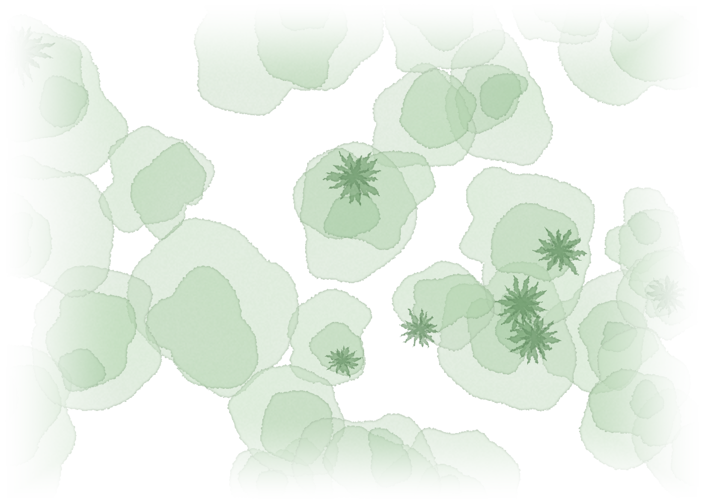
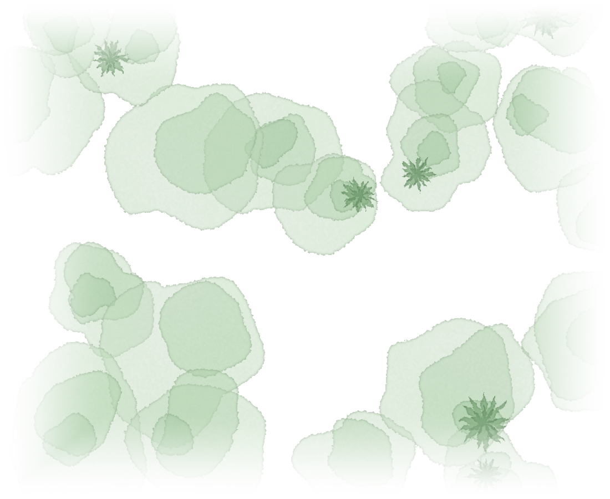

los invitamos a celebrar nuestro matrimonio
Valeria Ortiz Jaramillo y Juan Felipe Castillo Madriñán
Palomino, Guajira, Colombia
12 y 13 de febrero 2027
Faltan … días


los invitamos a celebrar nuestro matrimonio
Palomino, Guajira, Colombia
12 y 13 de febrero 2027
Dos días junto al río
Un viernes para relajarse y un sábado para celebrar.
Antes del sí
Viernes, 12 de febrero
La ceremonia
Sábado, 13 de febrero
Lindos y cómodos
La ceremonia es sobre arena y piedritas, a la orilla del agua.
Palomino, Guajira
Palomino es un pequeño pueblo en el departamento de la Guajira y está ubicado a una hora y media de Santa Marta.
Aeropuerto Simón Bolívar (SMR).
Puedes llegar en taxi, van o bus público desde el round point de Mamatoco.
Para reservar un taxi o una van para varias personas sugerimos contactar a:
Nuestro punto de encuentro los dos días.
Planes en Palomino
Cuando se acerque la fecha te recomendaremos planes, restaurantes y actividades para hacer en tu visita a Palomino.
Queremos saber que vienes
Haz click acá para confirmar tu asistencia. Te recomendamos avisarnos antes del 10 de diciembre.
Regalos